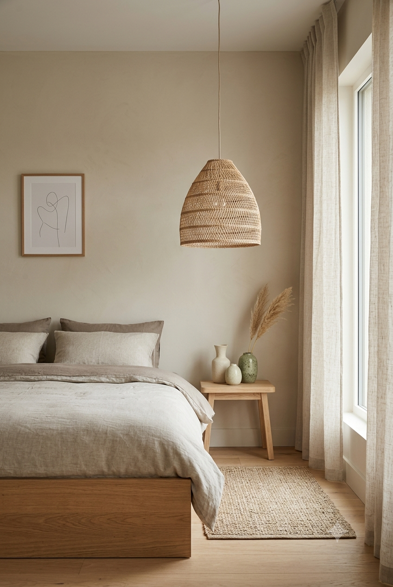

Japandi combines Japanese wabi-sabi (finding beauty in simplicity and imperfection) with Scandinavian hygge (comfort and warmth) into a single aesthetic that's become one of the most requested bedroom styles on Pinterest over the past two years. It sits between minimalism and warmth — calmer than boho, warmer than pure Scandinavian white-on-white.
Natural Materials, Muted Tones
Unstained or lightly stained wood, rattan, stone, and linen form the material palette. Colors stay muted and earthy — soft clay, sage, warm gray, off-white — rather than bright or saturated. Nothing in a Japandi room should feel loud; the entire aesthetic is built around a sense of quiet.
Rattan as the Signature Texture
If one material had to represent this style, it would be rattan. A rattan pendant lamp brings warmth and natural texture to a room without adding visual clutter — the woven pattern reads as organic rather than busy, which is exactly the balance Japandi is built around.
Ceramics With Imperfection
Wabi-sabi specifically celebrates asymmetry and visible imperfection rather than hiding it. A set of slightly irregular, handmade-look ceramic vases fits this philosophy far better than a perfectly matched, machine-uniform set — the small variations between pieces are the point, not a flaw to correct.
Low Furniture, Open Floor
Japandi rooms tend to use lower-profile furniture — a platform bed frame close to the ground rather than a tall frame with a box spring — which opens up visual floor space and reinforces the calm, grounded feeling the style is going for. If a full furniture swap isn't practical, even removing a bed skirt to expose more of the floor underneath moves a room in this direction.
Function Over Decoration
Every object in a Japandi room should ideally serve a purpose beyond decoration — a beautiful ceramic bowl that also holds keys, a woven basket that also stores blankets. Purely decorative objects with no function are the exception here, not the rule, which is part of what keeps these rooms feeling calm rather than staged.
This pairs naturally with our Minimalist Bedroom guide, or explore more Neo Deco Style ideas for warmer metal accents.
* As an Amazon Associate, NestlyVibes earns from qualifying purchases at no extra cost to you. See our Disclosure Policy.